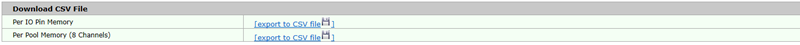
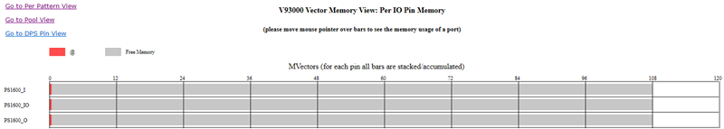
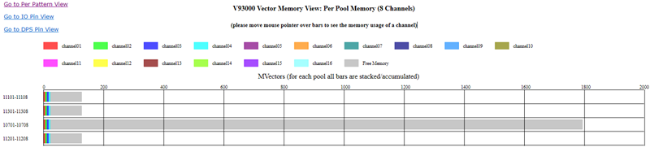
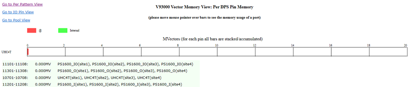

Vector memory usage report
The vector memory usage report provides views by pin and by memory pool for analyzing the memory usage status, in order to optimize the usage of licensed memory in a test head card.
Links to download the vector memory details
At the top of the report, the links to download the per IO pin memory and per pool memory files are provided. Click Export to CSV file in the table to download the corresponding memory usage details.

Per IO pin view
The memory usage of each IO pin is displayed, ordered by the amount of memory used by the pins.
The grey bar represents the free memory of the pin.

Per pool view
The memory usage of each channel in each memory pool is displayed with a separate color in the bar graphs.
The grey bar represents the free memory of the pool.
The pools are ordered by how much memory each one uses.

Per DPS pin view
The memory usage of each DPS pin is displayed, ordered by the amount of memory used by the pins.

You can click the links at top left of each level of memory view to go to the view of other levels.
By clicking Go to Per Pattern View, the per pattern memory table opens. You can click Export to CSV file to save it as a CSV file.
Functional changes
- Introduced in SmarTest 7.10.1